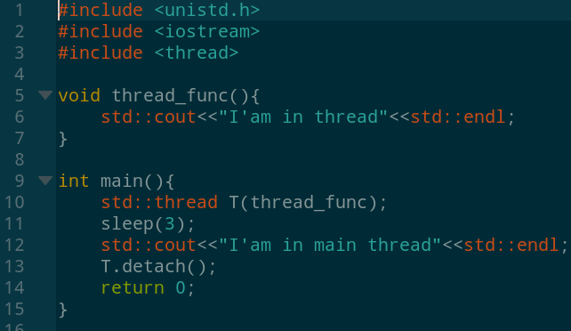

Очередь
Очередь (англ. queue) — это структура данных, добавление и удаление элементов в которой происходит путём операций push и pop соответственно. Притом первым из очереди удаляется элемент, который был помещен туда первым, то есть в очереди реализуется принцип «первым вошел — первым вышел» (англ. first-in, first-out — FIFO). У очереди имеется голова (англ. head) и хвост (англ. tail). Когда элемент ставится в очередь, он занимает место в её хвосте. Из очереди всегда выводится элемент, который находится в ее голове. Очередь поддерживает следующие операции:
- empty — проверка очереди на наличие в ней элементов,
- push (запись в очередь) — операция вставки нового элемента,
- pop (снятие с очереди) — операция удаления нового элемента,
- size — операция получения количества элементов в очереди.
Стек
Стек (от англ. stack — стопка) — структура данных, представляющая из себя упорядоченный набор элементов, в которой добавление новых элементов и удаление существующих производится с одного конца, называемого вершиной стека. Притом первым из стека удаляется элемент, который был помещен туда последним, то есть в стеке реализуется стратегия «последним вошел — первым вышел» (last-in, first-out — LIFO). Примером стека в реальной жизни может являться стопка тарелок: когда мы хотим вытащить тарелку, мы должны снять все тарелки выше. Вернемся к описанию операций стека:
- empty — проверка стека на наличие в нем элементов,
- push (запись в стек) — операция вставки нового элемента,
- pop (снятие со стека) — операция удаления нового элемента.
Многопоточность
Что такое многопоточность? В многоядерных процессорах или многопроцессорных системах многопоточность осуществляется тем что на разных ядрах или процессорах параллельно исполняются несколько процессов. А вот что касается одноядерного компьютера то мнгопоточность осуществляется путем разделения рабочего времени процессора между процессами. Операционная система по очереди дает на выполнения процессору некоторое количество инструкций от каждого процесса. Получается что в реальности процессы не выполняется одновременно, а только имитируется их одновременное выполнение. Это свойство операционной системы и называется многопоточностю. Многопоточность используется в тех случаях когда параллельное выполнение некоторых задач приводит к боле эффективному использованию ресурсов вычислительной системы. Надо отметить что в многопоточной приложении потоки выполняются в адресном пространстве приложения.
В новом стандарте C++11 многопоточность осуществлен в классе thread, который определен в файле thread.h. Для того чтобы создать новый поток нужно создать объект класса thread и инициализировать передав в конструктор имя функции которая должна выполнятся в потоке. Давайте посмотрим на маленький пример многопоточной программы чтобы все стало понятнее.
Треды это очень крутой инстумент, который позволяет вам выполнять ваш говнокод параллельно, например если вам нужно перемножать матрицы или перекочать пол тыртырнета. Однако используя треды крайне легко стрельнуть в ногу, например:


А кто это сделал?
Планировщик – это часть менеджера процессов, которая ответственна за переключение между процессами и выбор очереди по какой-либо стратегии. ОС поддерживает все блоки управления процессом (PCB) в очередях планирования процесса:
- Очередь задач (job queue) поддерживает все процессы в системе.
- Очередь ожидания (ready queue) хранит информацию обо всех процессах, находящихся в основной памяти в состоянии ожидания.
- В эту очередь попадают и новые процессы. Очереди из устройств (device queue) – это процессы, заблокированные из-за недоступности устройств ввода-вывода.
Модели состояния делятся на активные и неактивные:
- Активные: при создании нового процесса он переходит в класс активных.
- Неактивные: процессы, которые не выполняются, а ждут завершения других процессов. Каждая запись в очереди является указателем на конкретный процесс. Очередь реализуется с использованием связанного списка. Использование диспетчера заключается в следующем: когда процесс прерывается, то переносится в очередь ожидания. Если процесс завершен или отменен – он отменяется вовсе.